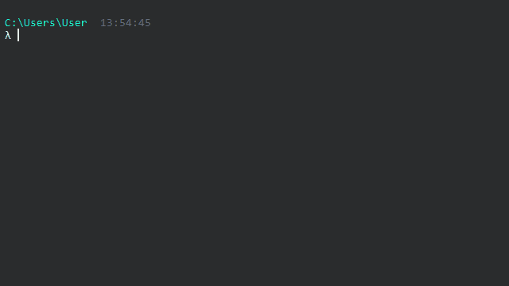

Dxftoedb4
Dxftoedb4 es el cuarto script de la aplicación. Su función es rescatar los datos desde los planos planos_dxftoedb/cargas/<archivo>_cargas.dxf y generar el modelo Etabs.
Requisitos
- ETABS 19 o 21 instalado y con licencia.
[Version_etabs]deproject_settings.tomlsolo indica cómo se escriben las tablas del modelo; la etapa abre el ETABS que esté registrado en el equipo, por lo que conviene que coincidan (ver Configuración). - La etapa abre su propia instancia de ETABS, con un modelo en blanco (unidades ton, m, C), y la deja abierta al terminar para que se revise el modelo recién construido. No toca ni cierra una instancia de ETABS que ya estuviera abierta, y cada corrida abre una nueva: cerrar las que no se usen.
- Si ETABS no se puede abrir,
dxftoedb4termina conERROR: ETABS no disponible o falló la llamada (EtabsComError): ETABS no respondió (...)(con la llamada que falló en una líneaDetalle:) y código de salida 4 (dxftoedb-cliimprimeERROR: EtabsComError: ..., también con código 4). Comprobar que ETABS esté instalado y que se abra normalmente (ver Problemas Frecuentes).
Input
planos_dxftoedb/cargas/<archivo>_cargas.dxf, uno por plano declarado en[Stories].Data.grilla_<Project_Number>.xlsx, en la raíz de la carpeta de trabajo. La grilla del modelo ETABS sale de este Excel, no de los planos (ver Excel de coordenadas). Si el archivo falta, la etapa termina conERROR: falta un insumo del pipeline.- Archivo de configuración
project_settings.toml, conProject_Information.Project_Number(obligatorio).
La etapa 4 lee el _cargas, no el _dxftoedb
Los muros, vigas y columnas se leen del _cargas, que dxftoedb3 copió del _dxftoedb. Un cambio hecho en el _dxftoedb después de correr dxftoedb3 no llega al modelo: hay que repetirlo en el _cargas o volver a correr dxftoedb3 (que reemplaza el _cargas completo, con sus hatch).
Uso
Se debe ejecutar invocando el comando dxftoedb4
Luego de la ejecución se solicitará al usuario seleccionar la carpeta de trabajo. La carpeta de trabajo es donde está el archivo de configuración project_settings.toml.

Output
El resultado de la ejecución de dxftoedb4 es el archivo .edb del modelo, guardado en la carpeta de trabajo.
El nombre del archivo se deriva del [Project_Information] del project_settings.toml:
Project_Number(p. ej.R4500.edb). La clave es obligatoria: sin ella la etapa termina conERROR: Project_Number, porque también define el nombre del Excel de grilla.- Si la clave existe pero está vacía, se usa
Project_Namey, si también está vacío,modelo.edb. Con la clave vacía el Excel se busca comogrilla_.xlsx, así que no conviene dejarla vacía.
Tip
Desde el CLI se puede cambiar el nombre del .edb sin editar el
TOML, con --set Project_Information.Project_Number=R4500. Ese valor también
define el nombre del Excel de grilla: ver la advertencia del CLI.
Volver a correr dxftoedb4 reemplaza el .edb
La etapa guarda el modelo en <Project_Number>.edb sin preguntar. Si el archivo ya existe, lo reemplaza, junto con todo lo que se haya hecho en ETABS sobre él (por ejemplo, los momentos de TAX y TAY aplicados con tatoedb o los casos FUND_* ya editados). Antes de volver a correr la etapa, copiar el .edb.
Qué se dibuja
Capa del plano _cargas |
Elemento en ETABS |
|---|---|
VIGAS_etabs |
frames (o shells, si la viga es peraltada: cuando el largo del tramo es de hasta 2 veces su alto total) |
MUROS_etabs |
áreas de muro, con su pier o spandrel (ver abajo) |
COLUMNAS_etabs |
frames verticales (ETABS los clasifica como Column) |
Achurados de LOSA |
áreas de losa, con diafragma, cargas y modificadores |
Las columnas van de la cota del piso inferior a la del piso de su plano, igual que los
muros. Su sección rectangular sale medida del rectángulo dibujado (P65/65G25) y comparte
tabla con las secciones de viga. Si la columna está girada respecto de los ejes globales,
se le asigna el ángulo de ejes locales correspondiente.
Las propiedades de las losas (espesor, hormigón, factores y cargas) salen de la tabla de losas y cargas del _cargas (ver Dxftoedb3).
Qué más define la etapa
Además de dibujar, la etapa deja en el modelo varias definiciones que no se piden en los planos:
- Todas las losas se asignan al diafragma
D1, que se define semirrígido. La claveDiaphragmsdel TOML no se lee (ver Diafragmas). - La masa sísmica se fija sola, desde las cargas, según la categoría del edificio (ver Masa sísmica).
- Los patrones TAX y TAY se crean vacíos, sin cargas: hay que correr tatoedb después de esta etapa (ver Luego de dxftoedb4).
- Con
fundaciones = trueen[Load_Combinations], los casos de fundacionesFUND_*se crean con modos y factores provisorios (modo 1 para el sismo X, modo 2 para el Y y factor 999), y el primer análisis automático los deja desactivados (ver Primer análisis automático).
Avisos y errores
Los AVISO que imprime la etapa (muros que no se modelan, muros sin pier) y sus errores más frecuentes están explicados, con la causa y la acción, en Avisos y errores por etapa. Un muro sin rótulo no genera ningún aviso: entra al modelo con 99,9 cm de espesor (ver Dxftoedb2).
Piers y spandrels
Cada área de muro de MUROS_etabs recibe una etiqueta según dónde caen sus bordes:
- Pier: áreas cuyo borde inferior y superior están en cotas de piso (los muros propiamente tales).
- Spandrel: áreas con algún borde en una cota intermedia (dinteles y antepechos).
Partición y nombres de los piers
Los piers se asignan con el algoritmo de iec_core.piers, el mismo que usa la skill
asignar-piers (etabs-mcp), validado por el ingeniero sobre los ejes reales de R4248.
Antes, todos los muros de un eje formaban un único pier {eje}_1; ahora cada eje se
particiona en sus tramos reales de muro y cada tramo es un pier con nombre
{eje}_{NN}: correlativo de dos dígitos por eje, numerado de abajo hacia arriba y de
izquierda a derecha (se ordena por cota inferior y luego por posición a lo largo del
eje). Un muro ciego de 4 pisos sobre el eje A es A_01; un marco con una puerta en
cada piso da A_01 (pata izquierda) y A_02 (pata derecha).
Reglas de la partición, aplicadas a cada eje:
- La continuidad manda: un retranqueo o coronamiento (base ancha con torre angosta encima) no corta el pier. Si los muros están físicamente conectados, son un solo pier de base a corona.
- Solo cortan las aberturas y las separaciones reales: cada abertura divide la banda en patas, y las dos patas de una misma abertura nunca comparten pier (ni de forma transitiva). Una pata continúa en altura aunque la interrumpa un dintel: puertas apiladas dan una pata continua por lado.
- Muros no conectados son piers distintos: dos estructuras sin base ni viga común en la misma elevación (p. ej. pilares aislados) no se mezclan.
- Los muros de borde de una elevación quedan como pier propio, con precedencia sobre cualquier otro agrupamiento.
La partición es determinista: el mismo plano produce siempre los mismos piers.
Criterio de ejes
Un muro pertenece al eje cartesiano (X o Y) sobre el que están todos sus
vértices, con tolerancia de 1 mm (el JSON se genera desde el plano, así que los muros
van exactamente sobre su eje). Dos ejes paralelos cercanos (p. ej. D y E a 20 cm)
son ejes distintos y cada uno lleva sus propios piers.
Los muros que no yacen sobre un eje cartesiano de la grilla —sobre un eje diagonal
(grilla General) o fuera de toda grilla— se dibujan igual pero quedan sin pier,
y la etapa lo avisa por consola justo antes de dibujar las áreas:
AVISO piers: eje ? area #37 sin pier (sin eje en el grid)
#37 es el número de orden con que se dibujó el área en ETABS. Esos muros hay que
etiquetarlos a mano (la skill asignar-piers sí acepta ejes diagonales). Si el
algoritmo no logra ubicar en ningún pier un muro de un eje cartesiano, el aviso lleva
el nombre del eje y el motivo; ese muro también queda sin etiqueta, visible, en vez
de mal etiquetado.
Para etiquetarlos a mano en ETABS: #37 es también el nombre único con que la etapa
creó el área (salvo que ETABS lo haya cambiado por coincidir con otro). Seleccionar
los paneles del muro en una elevación o en planta y asignar la etiqueta con
Assign > Shell > Pier Label: una existente o una nueva, con la convención
{eje}_{NN}. Una etiqueta puesta a mano no pasa por la partición: revisar que no junte
muros que deberían ser piers distintos.
Spandrels
Los spandrels no cambian: cada dintel o antepecho recibe el spandrel {eje}_1 de su
eje, como siempre (se crean además las etiquetas {eje}_2, {eje}_3 y sus variantes
_izq/_der, disponibles para reasignar a mano). Un dintel sobre un eje diagonal
queda sin spandrel, sin aviso.
Qué implica para la revisión
- Los esfuerzos por pier cambian de significado: antes
A_1integraba todo el eje; ahoraA_01,A_02, … integran cada tramo real de muro entre aberturas, que es lo que se verifica. Todo lo que consume piers aguas abajo (edbtopre →.geo/.pre, curvaw, la planilla VH) ve estos nombres y estos tramos. - Los nombres no son comparables con modelos generados por versiones anteriores
(
A_1frente aA_01): para comparar esfuerzos hay que mapear los piers. - Revisar los
AVISO piersde la consola y completar a mano los muros de ejes diagonales antes de correr el análisis; si no, esos muros no aparecen en ninguna tabla de piers.
Siguiente paso
Revisar el modelo en la instancia de ETABS que quedó abierta. La etapa no avisa de todo lo que puede faltar, así que conviene comprobar:
- Que ninguna sección de muro empiece con
M99.9y ninguna de viga conV99.9/99.9: son los muros y las vigas que quedaron sin rótulo. - Que estén todas las columnas: la etapa no avisa de los rectángulos que no pudo leer.
- Que cada losa dibujada exista, con su diafragma y sus cargas: un hatch fuera de la capa
LOSAno se modela, y uno con un color que no figura en la tabla se omite. - Que los muros tengan su pier: los
AVISO piersde la consola nombran los que quedaron sin etiqueta. - La masa sísmica y el diafragma
D1, que la etapa define sola (ver Qué más define la etapa).
Después, y antes del análisis final, correr tatoedb para asignar la torsión accidental a TAX y TAY. tatoedb necesita el modelo ya analizado: con [Analize].run = false, hay que analizarlo antes en ETABS (ver Prerequisitos del modelo). Como TAX y TAY están vacíos, tatoedb no pide confirmar el reemplazo ni exige --force (ver Luego de dxftoedb4).
El orden completo de la revisión, con lo que entra y sale de cada etapa, está en Flujo de una revisión.